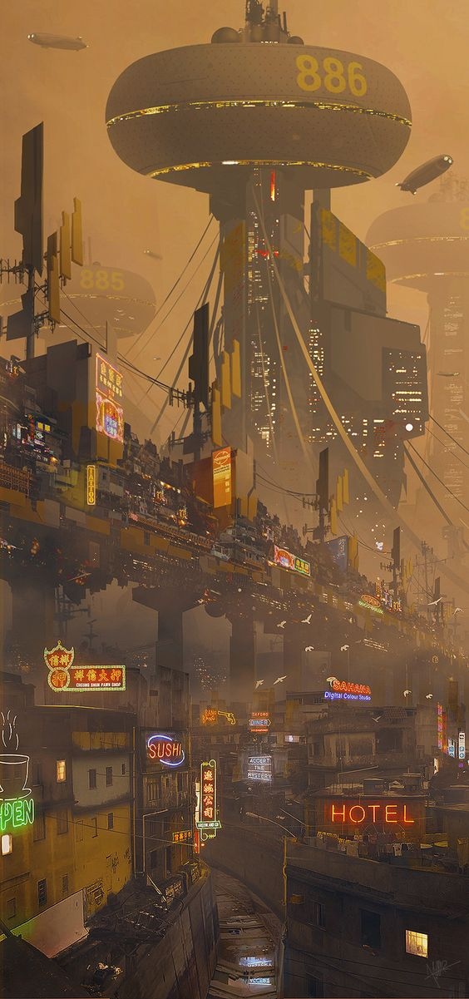
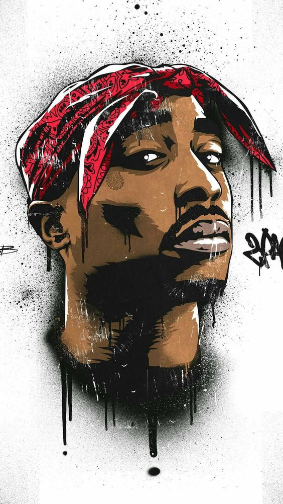

The term "dystopia" refers to an imaginary or speculative society or world that is characterized by oppressive or undesirable conditions, often portraying a grim, bleak, or dehumanizing future. It is the opposite of a utopia, which represents an ideal or perfect society. In a dystopian setting, there are typically totalitarian governments, social and economic inequality, restricted personal freedoms, and a sense of hopelessness or despair.
"The Art of War" is an ancient Chinese military treatise by Sun Tzu, offering timeless wisdom on strategy, leadership, and the psychology of conflict. It emphasizes understanding the enemy, careful planning, and the art of winning without engaging in direct combat.

2Pac Shakur, the legendary American rapper, actor, and social activist, his legacy as an iconic figure in hip-hop and an inspiration to artists and activists worldwide. Tragically, his life was cut short at 25, but his impact continues to resonate, making him a cultural icon whose influence remains potent.
